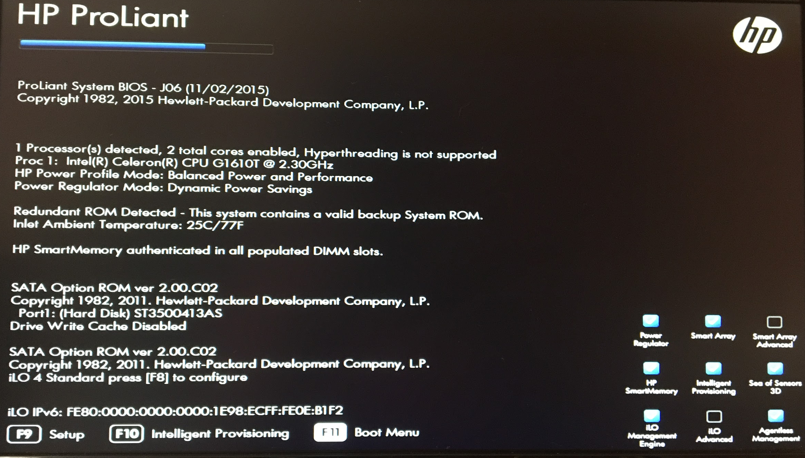

Lo primero que hay que hacer para instalar Proxmox es bajar la iso oficial de proxmox , para eso seguiremos el siguiente enlace: https://www.proxmox.com/en/downloads/category/iso-images-pve
Tras bajarla procederemos a montarla en nuestro USB formateado , para grabar esta ISO se recomienda usar el Software Etcher. (El montaje con rufus no funcionara , ni la línea de comando que nos aparece en la página de Proxmox , en cualquiera de estos casos, nos saldra imagen corrupta).
Antes de introducir el pendrive e proceder con la instalación tenemos que acceder a la bios de nuestro sistema y activar la virtualización. Es un paso muy importante y que nosotros tuvimos que realizar ya que si no no hay manera de realizar la instalación.
Tras esto procedemos a introducir el stick en nuestro servidor físico, encendemos y accedemos al menú de Boot (f11 en la carga de la bios), tras esto nos saldrá una pantalla con distintas opciones, debemos escoger la 3era para instalar desde un USB.
Si hemos realizado bien el montaje de la iso saldrá lo siguiente en pantalla y le daremos a la primera opción (Install Proxmox VE).
Tras darle nos pedirá que aceptemos los términos de proxmox, le damos a “I Agree”.
Tras eso elegimos nuestro país, zona horaria y disposición del teclado.
A continuación debemos introducir una contraseña y un email. Aunque el campo de email es obligatorio, no hace falta validar la cuenta.
Tras aceptar nos saldrá esta pantalla indicando que la instalación comienza.
Una vez nos aparezca lo mostrado en esta captura, damos nuestra instalación por completada satisfactoriamente.
En el caso de haber introducido una IP errónea y querer cambiarla debemos realizar lo siguiente, introducimos en la terminal nano /etc/network/interfaces y nos abrirá el archivo de configuración. Una vez dentro introduciremos lo siguiente para poder modificarla manualmente.